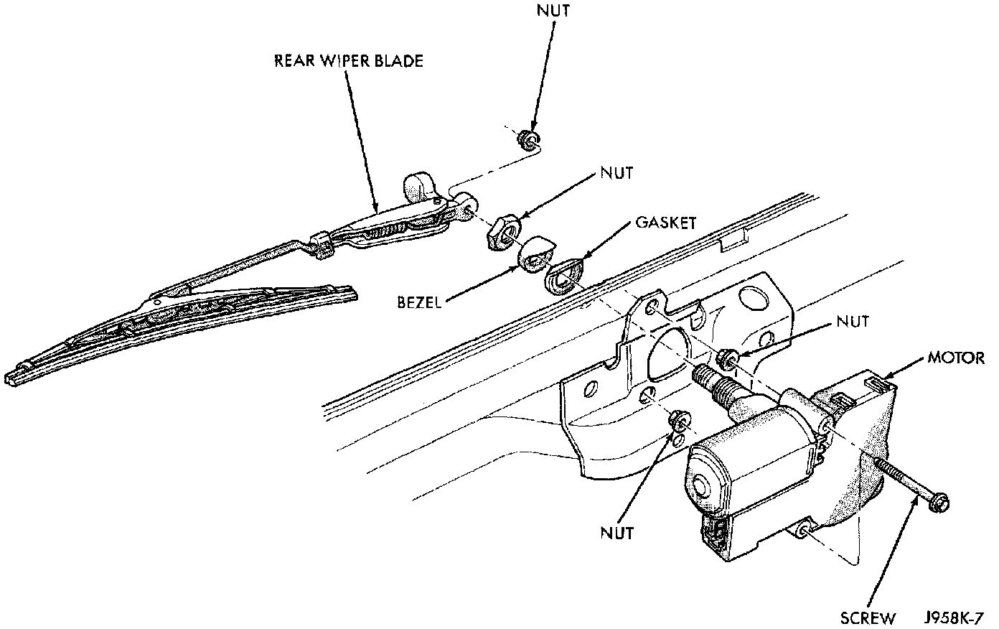

Rear Wiper Motor Replacement
1. Disconnect and isolate the battery negative cable.2. Remove the rear wiper arm as described.
Rear Wiper Motor Remove/Install:

3. Remove the nut that secures the motor from the outside of the liftgate.
4. Remove the external bezel and gasket.
5. Remove the liftgate inner trim panel.
6. Unplug the rear wiper motor wire harness connector.
7. Remove the screws that secure the wiper motor to the inside of the liftgate.
8. Remove the rear wiper motor.
9. Reverse the removal procedures to install. Tighten the mounting hardware as follows:
- Motor mounting screws - 1 to 1.7 N.m (10 to 15 in. lbs.)
- Motor mounting nut - 4 to 5.6 N.m (35 to 50 in. lbs..).